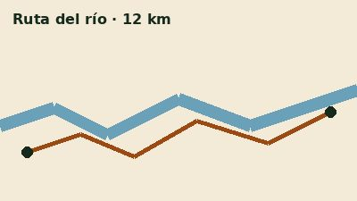

Consejos para el día de la ruta
Lleva agua y casco. El único repecho está en el kilómetro 7, al pasar bajo la autovía. Hay fuentes en los kilómetros 3 y 9.
Recorrido llano de 12 km que sigue la orilla del río entre el puente viejo y el parque de la desembocadura. Es apta para cualquier bicicleta y se hace en una hora a ritmo tranquilo.

Lleva agua y casco. El único repecho está en el kilómetro 7, al pasar bajo la autovía. Hay fuentes en los kilómetros 3 y 9.
| Tramo | Distancia | Acumulado | Hora de paso |
|---|---|---|---|
| Puente viejo – Fuente del molino | 3 km | 3 km | 10:15 |
| Fuente del molino – Paso de la autovía | 4 km | 7 km | 10:35 |
| Paso de la autovía – Merendero | 2 km | 9 km | 10:45 |
| Merendero – Parque de la desembocadura | 3 km | 12 km | 11:00 |
| Horas orientativas a una media de 12 km/h, sin paradas. | |||